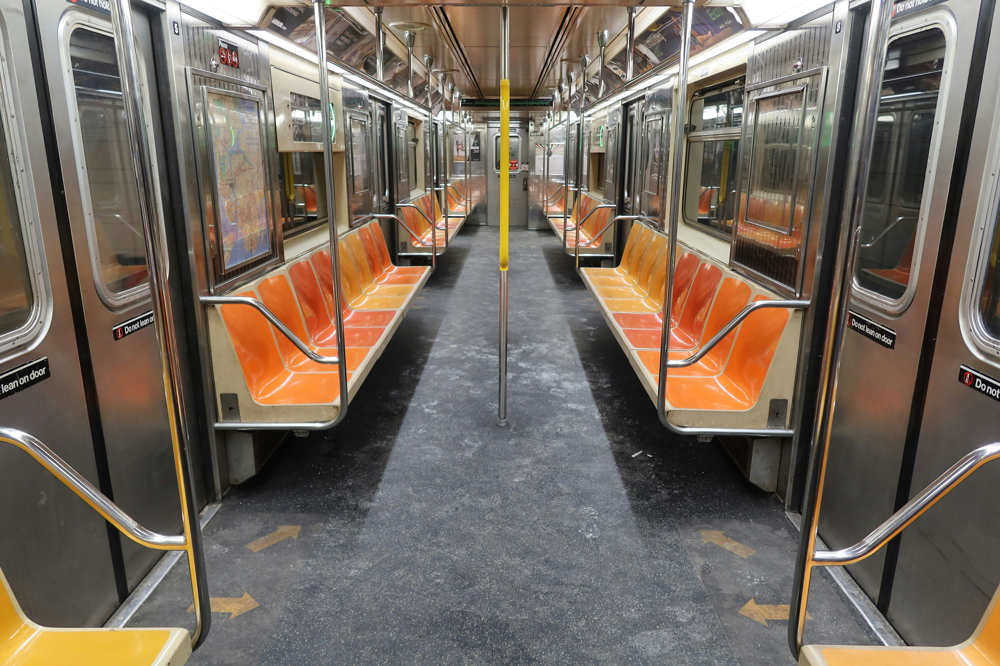

Human-AI Decision Intelligence
Improving decision-making by integrating human intuition and AI reasoning under uncertainty

Improving decision-making by integrating human intuition and AI reasoning under uncertainty
Structuring complex systems and procedures using ontologies and knowledge graphs
Enhancing skill transfer and collaboration through interactive, multimodal environments
Leveraging sensor data and predictive models to improve reliability and prevent failures

Improving inspection accuracy through virtual environments and expert behavior analysis.

Connecting infrastructure knowledge and data to support flood response in subway systems.

Using reinforcement learning to capture and share expertise in manufacturing.

Supporting safer vehicles through sensors, inspection, and human–AI decision-making.

Using knowledge graphs to understand the gap between procedures and operator decisions.

Identifying communication barriers and supporting collaboration in building design.